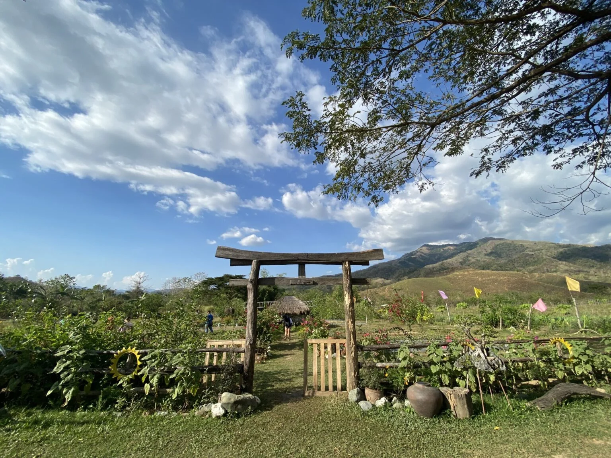
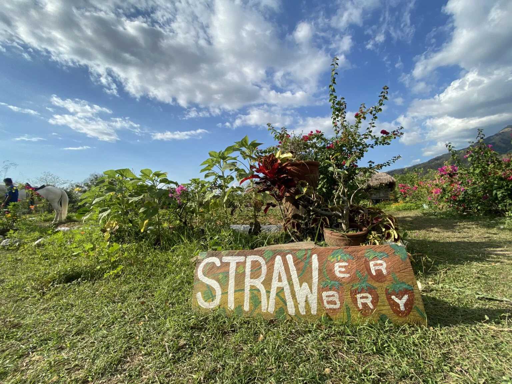
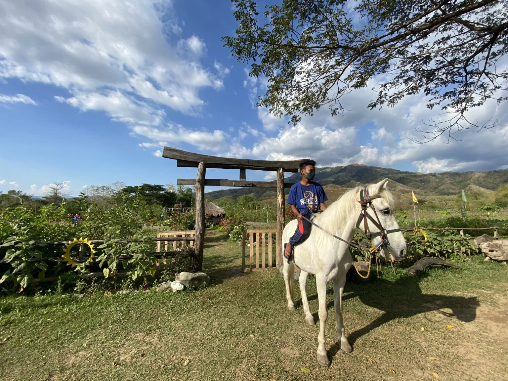
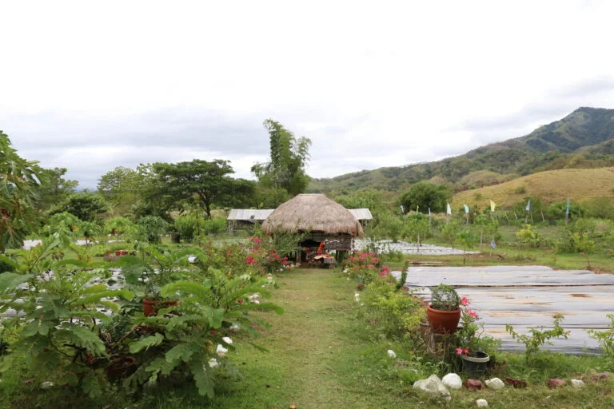

The R. Rebs Integrated Eco Farm in Natividad, Pangasinan, Philippines, is a vibrant agritourism destination that blends sustainable farming with recreational and educational experiences. The farm showcases diversified crops, seasonal blooms, and interactive farm activities, providing visitors with a hands-on opportunity to engage with nature while learning about environmentally responsible farming practices.
Concept and Overview

R. Rebs Integrated Eco Farm spans flower fields, vegetable plots, crop areas, ponds, and animal zones where visitors can wander and explore. Its layout highlights the integration of multiple farming systems, from ornamental gardens to edible crop plots, all linked by walking paths and rest areas.
These features create a visually appealing environment that balances productivity with leisure. Families and nature lovers are drawn to the farm for its relaxed atmosphere, vibrant floral displays, and opportunities to observe farm life up close.
Whether strolling through colorful gardens or watching fish in the ponds, visitors experience how diversified farming can enhance both the landscape and the overall farm visit.
Attractions and Activities


Guests can enjoy a wide range of activities beyond sightseeing. Flower gardens create photo opportunities, while different farm zones invite visitors to feed animals, take short walks, or try seasonal harvesting experiences.
Some farm areas may include horseback riding, picnic spaces, and open lawns for group gatherings. Seasonal events such as strawberry picking, open-farm weekends, and agricultural demonstrations add more variety to each visit.
This makes the farm appealing for both short leisure trips and longer family or school visits.
Education and Sustainability

The eco farm also functions as a hands-on classroom for sustainable agriculture. Guided tours often include explanations of crop rotation, soil management, pest control without heavy chemical use, and water conservation practices.
Schools and youth groups frequently visit to learn about these topics in a more immersive environment. Workshops, interpretive signs, and outreach programs help connect traditional farming knowledge with modern sustainable methods.
By demonstrating ecological stewardship within an agritourism setting, the farm encourages visitors to think more deeply about the role of agriculture in environmental conservation.
Visitor Information and Accessibility
Situated in Barangay San Juan, Natividad, Pangasinan, R. Rebs Integrated Eco Farm is accessible by road from larger towns such as Urdaneta and Dagupan. On-site amenities include rest huts, shaded picnic spots, and basic facilities that allow visitors to spend the day comfortably.
The open layout and visible pathways make the farm easy to navigate for families, groups, and solo travelers. Local transport options and private vehicles both provide practical access, and many visitors combine the farm with nearby rural attractions as part of a full-day countryside itinerary.